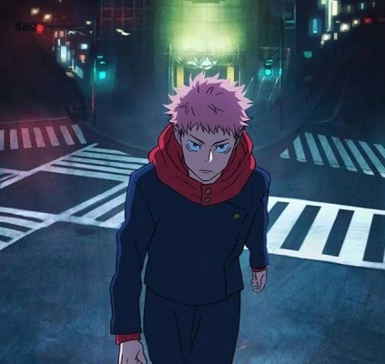
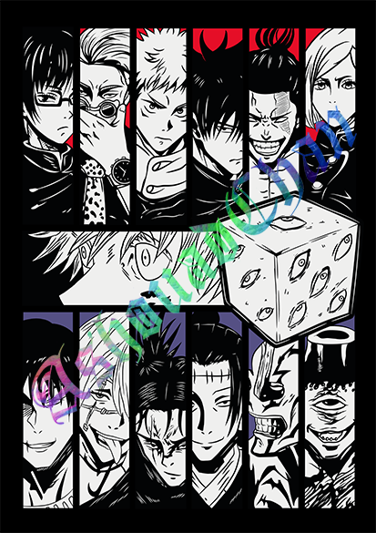

The Shibuya Incident Arc in Jujutsu Kaisen, one of the most awaited and exciting moments of the series, is a crucial milestone in this popular anime based on Gege Akutami’s manga.
This arc, spanning several episodes of the anime and chapters of the manga, represents a turning point for both the characters and the overall plot.
With a mix of frantic action, heartbreaking sacrifices, and unexpected twists, the Shibuya Incident redefines the motivations of the main characters and sets the stage for future conflicts in the Jujutsu Kaisen universe.
Context and Origin of the Arc
The Shibuya Incident takes place after the events of the Jujutsu High Selection Exam Arc and unfolds in Shibuya, one of the busiest and most iconic districts of Tokyo.
In this arc, the Jujutsu sorcerers and cursed spirits face off in an all-out battle, where the stakes are higher than ever.
The story begins when a group of cursed spirits, led by Suguru Geto, a former sorcerer turned enemy of humanity, sets into motion a plan to trap the most powerful sorcerers within the district and unleash chaos.
Character Development
Throughout the arc, several key characters undergo significant development.
One of the most prominent is Yuji Itadori, who, despite the numerous challenges and traumas, continues to seek a way to destroy Sukuna, the ancient cursed spirit residing inside him.
This arc also allows characters like Megumi Fushiguro and Nobara Kugisaki to shine even more in their roles as fighters and sorcerer apprentices.


Conclusion
The Shibuya Incident Arc is undoubtedly one of the most impactful and crucial moments in Jujutsu Kaisen.
With its impressive character development, epic battles, and unexpected twists, the arc not only redefines the course of the story but also the fate of the characters involved.
As the series moves forward into new challenges, this arc serves as a reminder of the cost of power and the constant struggle between light and darkness.
Do you want to know more about Shibuya in series and movies?
Below you can find more articles about series and movies where Shibuya plays an important role in the plot.